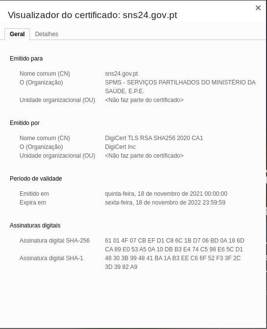

Atlântica - Instituto Universitário
Segurança em Sistemas Web
GSC - Laboratório de Desenvolvimento de Sistemas Web
Atlântica - Instituto Universitário
GSC - Laboratório de Desenvolvimento de Sistemas Web
Fernanda Passos
https://.



cert.keycert.crtfrom flask import Flask
app = Flask(__name__)
@app.route("/")
def hello():
return "Hello World!"
if __name__ == "__main__":
app.run(debug=True, ssl_context=('cert.crt', 'cert.key'))

| Utilizador | Palavra-passe |
|---|---|
| Ana | matrix |
| Pedro | KgY1q!o6 |
| João | 123456 |
| Maria | minhasenhasegura |
| Joana | 123456 |
def verificaPalavraPasse(passwd_dic, passwd_input):
return(passwd_dic == passwd_input)
# Dicionario que guarda os utilizadores
dic = {}
user = "Maria"
passwd = "teste123"
dic[user] = passwd
# Assumindo que user é Maria...
passwd_in = input("Palavra-passe: ")
print(verificaPalavraPasse(dic[user], passwd_in))| Utilizador | Palavra-passe (SHA256) |
|---|---|
| Ana | 6e00cd562cc2d88e238dfb81d9439de7ec843ee9d0c9879d549cb1436786f975 |
| Pedro | 9f89aa1497044d9bfe03543fa0b02310b8c78dcba0eff6a3923710c85fad1d5f |
| João | 8d969eef6ecad3c29a3a629280e686cf0c3f5d5a86aff3ca12020c923adc6c92 |
| Maria | 0591942e447a74c0ea310f39bb3760f3d5382a74866b08e5cfe210419ffe9be6 |
| Joana | 8d969eef6ecad3c29a3a629280e686cf0c3f5d5a86aff3ca12020c923adc6c92 |
import hashlib
def verificaPalavraPasse(hash, passwd):
bytes = passwd.encode()
return(hashlib.sha256(bytes).digest() == hash)
def geraHash(passwd):
# Gera o hash (SHA 256) da palavra-passe
hash = hashlib.sha256(passwd.encode())
# Obtém o hexadecimal e retorna
return (hash.digest())
# Dicionario que guarda os utilizadores
dic = {}
user = "Maria"
passwd = "teste123"
dic[user] = {} # Vamos usar agora o formato {"Maria":{"hash":"3d43..."}}
# Insere hash da palavra-passe para o utilizador
dic[user]["hash"] = geraHash(passwd)
# Assumindo que user é Maria...
passwd_in = input("Palavra-passe: ")
print(verificaPalavraPasse(dic[user]["hash"], passwd_in))| Utilizador | Salt | Palavra-passe (SHA256) |
|---|---|---|
| Ana | AMx1#w |
4e35262a19af80608d46baceaab7067f2fb9634f7eddd8c157261eab5db829b8 |
| Pedro | 8fdSPc |
dc5a70dd56d86bf612d8719819cd7b358f151e0d8ef67f4b05428a3549c904fb |
| João | !vk9$A |
e727a738b144b3ffeb7e746c27a4284feabb7735ab626a25558922dc97887844 |
| Maria | 04dRTT |
52c3a526f66eccacd2f570112eb026a11d35b7b287baa8403e461c89c79d452c |
| Joana | u)Ln56 |
9e1943d1be8296d677fca3b6d2bc81137d69045f0f14b627f589647b0ddd2780 |
import hashlib, string, random
# Verifica se hashSHA256(salt+passwd) é igual ao hash do argumento
def verificaPalavraPasse(salt, hash, passwd):
bytes = (salt+passwd).encode()
return(hashlib.sha256(bytes).digest() == hash)
# Gera um salt aleatoriamente, o hash(salt+passwd).
# Retorna uma tupla com o salt e os bytes do hash
def geraHash(passwd):
caracteres = string.ascii_letters+string.digits+string.punctuation
# Gera um salt de 16 bits aleatoriamente
salt = ''.join(random.choices(caracteres, k=16))
# Gera o hash (SHA 256) do salt + palavra-passe
hash = hashlib.sha256((salt+passwd).encode())
return (salt, hash.digest())# Dicionario que guarda os utilizadores
dic = {}
user = "Maria"
passwd = "teste123"
dic[user] = {} # Ex.: {'Maria': {'salt' = '...', 'hash': '...'}}
# Insere hash da palavra-passe para o utilizador
dic[user]["salt"], dic[user]["hash"] = geraHash(passwd)
# Assumindo que user é Maria...
passwd_in = input("Palavra-passe: ")
print(verificaPalavraPasse(dic[user]["salt"], dic[user]["hash"], passwd_in))